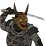
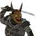

Requires
- Buildings:

- Arts:

- Resources:

Enables
- Units:

 

Basic Building Statistics (can be modified by difficulty level, arts, skills, traits and retainers)
- Cost: 6000
- +25% bonus to tax rate in this province
- +5 to provincial happiness
- +2 rank(s) for ninja recruited in this province
- Enables recruitment of Rank 1 ninja
- Enables recruitment of Rank 1 geisha
Clan Effects
- +1 to the number of geisha that may be fielded
- Each stealth chain building enables you to sustain one additional ninja (to a maximum of 5)
If you are first to construct
- +5% to the success chance of ninja actions
Description
Both happiness and sorrow burden the soul.
This whole city quarter given over to every kind of entertainment does much to increase the wealth of the province, as many are drawn to sample its pleasures. Even though much is relatively harmless fun, there is also a darker side where other business can be transacted away from watchful eyes. The district allows the recruitment of geishas. The concept of ukiyo or the "floating world" became formalised during the Edo period. Red light districts were not uncommon in great cities, but the one in Yoshiwara in Edo became the most elaborate and famous. Within its boundaries almost any form of entertainment was available for those with money. Visitors to the quarter were expected to leave their weapons behind, one of the few occasions when a samurai would willingly be disarmed! The "water trade" or mizu shobai had its own rules, strictly defined hierarchy and did not necessarily involve sex at all. Entertainers, comedians, dancers and others were all part of the trade, but not sexually available. There was also a very clear distinction between a prostitute or courtesan and a geisha. A geisha was unlikely to become sexually involved with any of her customers, and especially not for pay. She was a highly skilled entertainer and escort, not a bed companion.